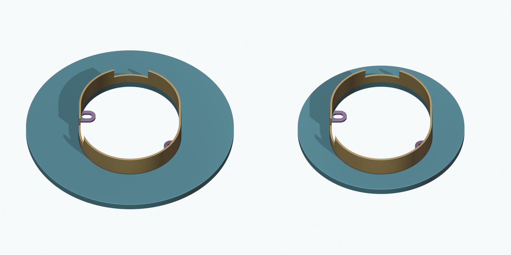
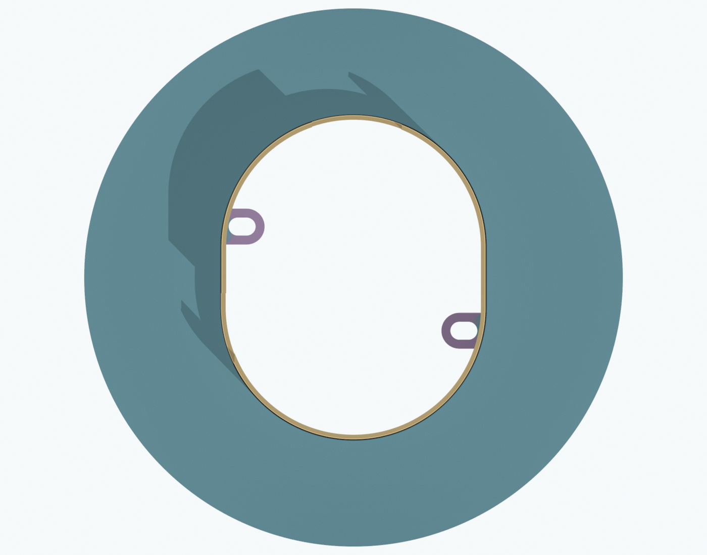
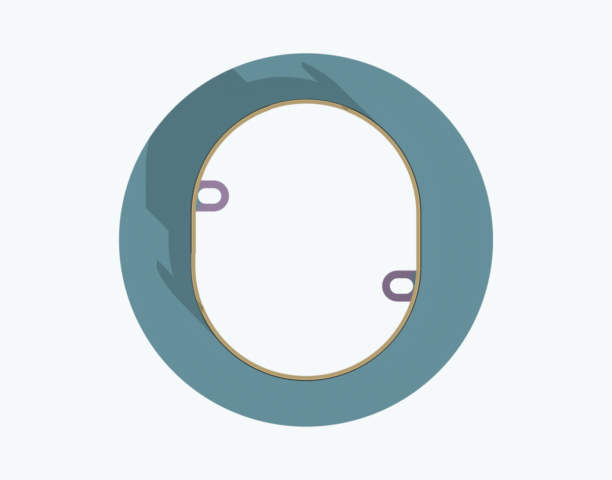

Project handoff · Original RF03 package
RF04 · Additional small-bed option · Temporary repair form
Same collar and screw slots.
A smaller face for a smaller bed.
The alternate trims only the outer circular face. The original 240 mm form is included unchanged. Take both to your friend's printer and choose the one that fits the usable bed.
Download both sizes · ZIPPrint guide · PDF

Actual delivered CAD at the same scale. Blue: face. Gold: collar. Purple: locating tabs. All print as one PETG material.
Original · RF03
240 × 240 × 32 mm
250 × 250 mm usable bed with a 5 mm brim.

3MF · STL · STEP
Original files copied byte for byte.
Smaller alternate · RF04
192.55 × 192.55 × 32 mm
203 × 203 mm usable bed with a 5 mm brim.

3MF · STL · STEP
47.0% less CAD volume. Actual filament/time depend on slicing.
What “half the face” means here
The narrowest face width outside the collar decreases from 47.45 to 23.725 mm. The outside stays circular. This halves that overhang, rather than the whole diameter or area. The 8 mm face, 2 mm collar wall, 3 mm tabs, 12 × 8 mm slots, rear reliefs and 24 mm maximum collar depth are unchanged. The first 12 mm of the collar is continuous.
Print one chosen size at 100%
Use the 3MF or STL, not both as separate parts. Units are millimeters. The flat front face and tabs are already on the print bed; the collar grows upward. Use unfilled PETG, the friend's established profile, 0.2 mm layers, 5 walls, 1.2 mm skins and 25% infill. Inspect the sliced layers with supports off. Keep a 5 mm brim and no raft. Do not scale the geometry down to fit.
How the smaller face guides the repair
The collar still defines the central boundary: build the supported repair toward it while keeping the service opening clear. The smaller face guides a smaller surrounding area. Beyond its outer edge, establish flushness to sound tile separately with a straightedge or suitable additional temporary form.
The screws locate; bracing supports. The slots allow play. Remove rod-end nuts for insertion and visually align the form. Use broad padded independent support; do not tighten nuts to load the tabs or flatten a warped print. Rehearse full seating and removal before repair. All formwork, release film and pads are removed afterward.
What has been checked
STEP, STL and geometry-only 3MF are checked for size, connected geometry and matching volume. CAD comparisons verify the collar, tabs and slots are unchanged and only outer face material was removed. This does not prove physical seating, strength, repair compatibility or water sealing.
CAD checks · Fresh handoff audit · Comparison Blender file
The original RF03 package still includes its continuous 12 mm collar. The final FT02 escutcheon plates remain separate and unchanged.